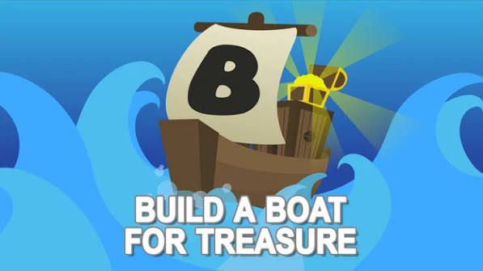
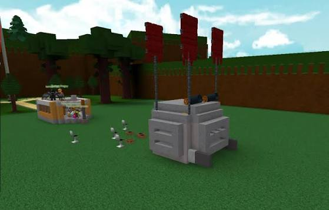
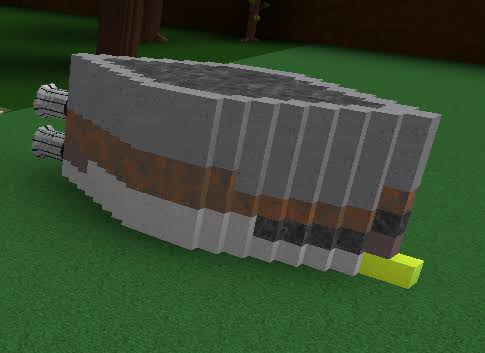
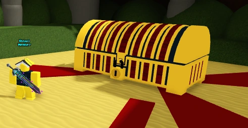
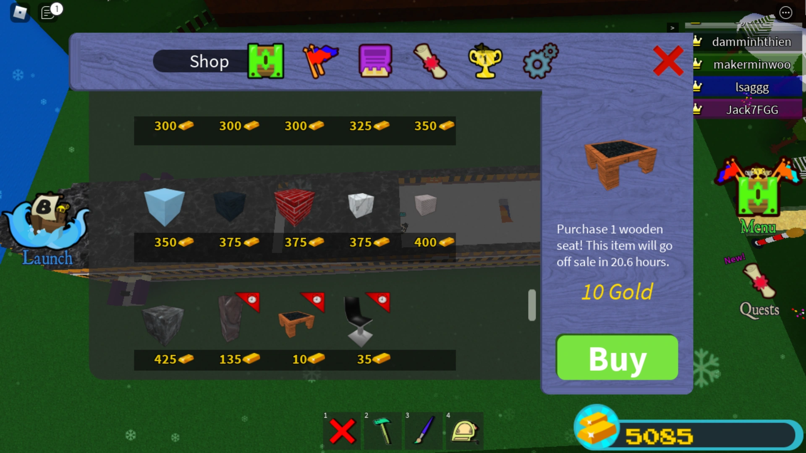
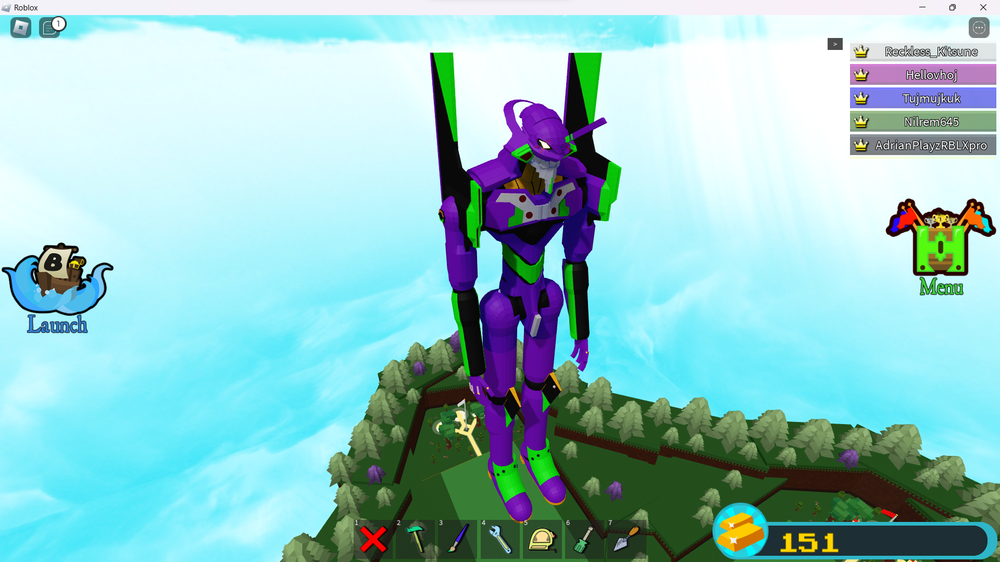
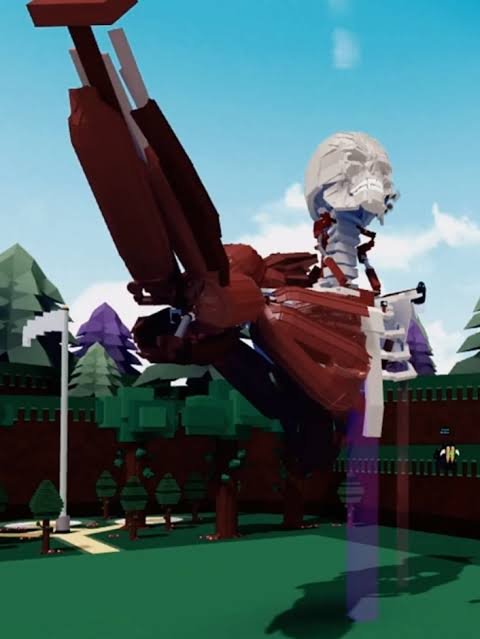
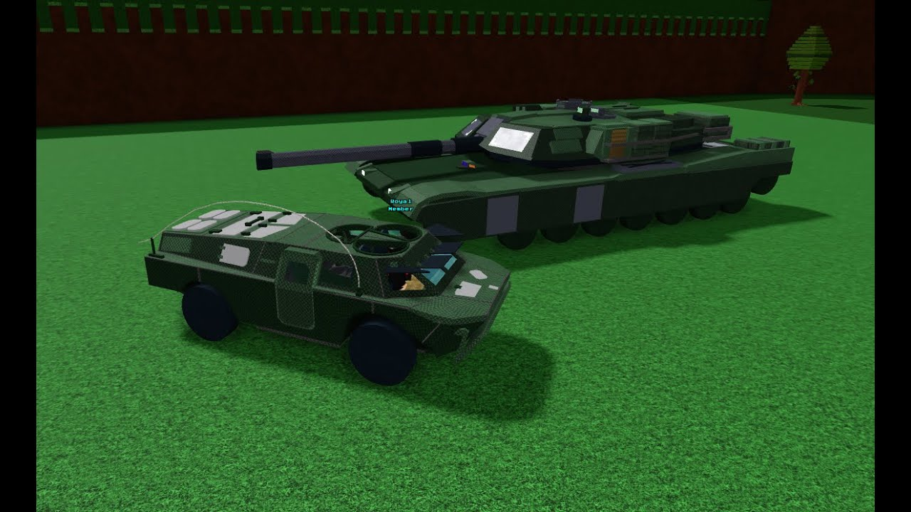

Hello! Welcome to my website where I talk about
my Top 5 Favorite Roblox Games!

This game is a popular sandbox simulation game and it might be the most
popular of all sandbox games on Roblox, created by "Chillz Studios" back in
November of 2016


In this game, you build anything that can protect you until the end of
the game, it doesn't matter how ugly or stupid it looks, you just have to
prioritize your own safety than concerning about what it looks like.


Once you reach the end, you are greeted with a large golden chest and
upon touching it, you are rewarded with a hefty amount of gold and you are
teleported back to your building plot. You can use your gold to buy more
building blocks so that you can build bigger builds.



This is where the reason as to why the game is still alive and popular
up to this day. Because of the tools that the game gives you the option to buy,
you can build literally anything in the game, whether it'd be a realistic car,
giant mechs, military vehicles with working weapons, and even sculptures.
The game gives players the freedom to build and express literally anything you could
think of.
Overall, this game is really fun for its sandbox properties and how you can
just do anything and build anything that will eventually work.